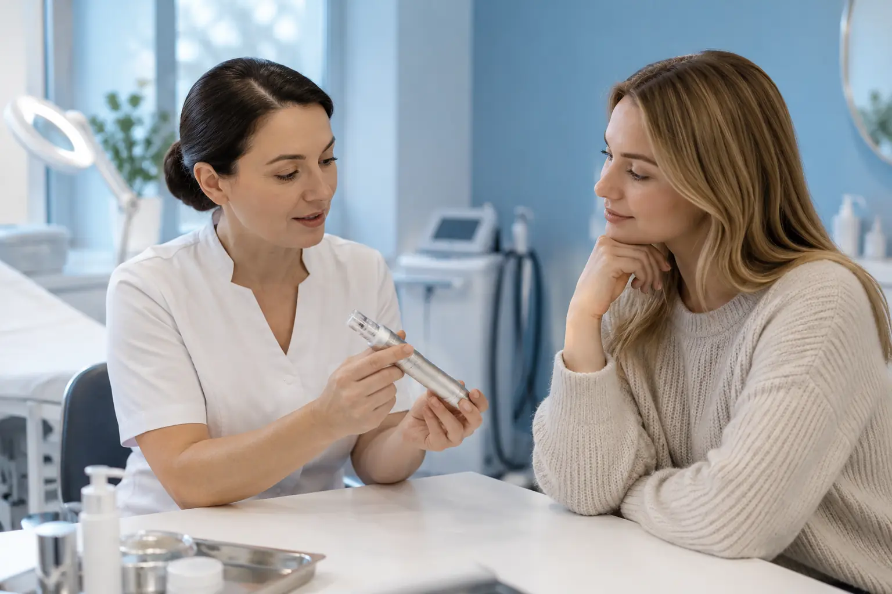

Mikroadatinė procedūra: įrenginys, paskirtis ir RF skirtumas
Autorius: Madbeauty redakcija · Numatyta 2026 m. gruodžio 14 d. 10:00 (Lietuvos laiku)
Paaiškiname, kuo skiriasi mikroadatinis poveikis nuo RF energiją perduodančios procedūros ir ką išsiaiškinti apie įrenginį bei paslaugos teikimą.

Pavadinimas „mikroadatinė procedūra“ nepasako visko, ką svarbu žinoti. Įprasto mikroadatinio įrenginio adatos pakartotinai praduria odą; RF mikroadatinis įrenginys per adatų elektrodus papildomai perduoda radijo dažnio energiją į odą ar po ja. Tai skirtingi veikimo būdai, todėl prieš sprendžiant verta išsiaiškinti tikslų įrenginį, jo paskirtį ir ar naudojama RF energija.
Ką daro mikroadatos?
JAV Maisto ir vaistų administracija (FDA) aprašo, kad mikroadatiniai prietaisai adatomis pakartotinai praduria odą ir sukuria smulkius dūrius. Tačiau šis terminas savaime neatskleidžia konkretaus modelio, jo paskirties ar numatomo poveikio. FDA informacija apibūdina JAV reguliavimo kontekstą, o ne Lietuvos paslaugos klasifikaciją. Daugiau apie veikimo principą ir prietaisų paskirtį pateikiama FDA informacijoje apie mikroadatinius prietaisus.
Kuo skiriasi RF mikroadatinė procedūra?
RF reiškia radijo dažnį. RF mikroadatinėje procedūroje adatų elektrodai perduoda energiją į odą ar po ja ir sukuria vietinį šildymą. Tai nėra vien „stipresnis“ įprasto mikroadatinio poveikio variantas: atsiranda papildomas energijos šaltinis ir atskiri saugos klausimai.
2025 m. spalio 15 d. FDA paskelbė įspėjimą apie rimtus komplikacijų pranešimus, susijusius su tam tikrais RF mikroadatinių prietaisų naudojimo atvejais, įskaitant nudegimus, randėjimą, riebalinio audinio netekimą ir nervų pažeidimus. Tai nėra rizikos dažnio įvertinimas ar teiginys, kad kiekvienas prietaisas ir naudojimo atvejis sukelia šias komplikacijas. Tai JAV institucijos įspėjimas; jis pats nenustato, kokie Lietuvos reikalavimai taikomi konkrečiai paslaugai. Plačiau – FDA saugos pranešime apie RF mikroadatines procedūras.
Ką patikrinti prieš pasirenkant?
Pavadinimas reklamoje nėra pakankamas paaiškinimas. Paprašykite konkrečių atsakymų į šiuos klausimus:
- Koks tikslus įrenginio gamintojas ir modelis? Ar galima susipažinti su gamintojo nurodyta paskirtimi ir naudojimo instrukcija?
- Ar procedūros metu adatos praduria odą? Ar įrenginys papildomai perduoda RF energiją?
- Kokia konkreti procedūra siūloma ir kokio poveikio teigiama siekiant? Kur galima patikrinti informaciją apie šį įrenginį ir jo paskirtį?
- Kaip paslaugos teikėjas apibrėžia jos pobūdį ir, jei tai sveikatos priežiūros paslauga, kokia įstaiga bei specialistas ją teikia?
Lietuvoje grožio paslaugos ir asmens sveikatos priežiūros paslaugos atskiriamos pagal paslaugos pobūdį, naudojamą įrangą ir riziką. NVSC pabrėžia, kad higienos pasas grožio paslaugoms nesuteikia bendro leidimo teikti sveikatos priežiūros paslaugas. Vien pavadinimas, pavyzdžiui, „estetinė“ ar „kosmetologinė“, pats savaime neatsako, kuriai kategorijai priklauso konkretus veiksmas. Bendrą paaiškinimą rasite NVSC informacijoje apie grožio ir sveikatos paslaugų ribą.
Jei konkreti paslauga priskiriama sveikatos priežiūrai, VASPVT nurodo tikrinti įstaigos ir specialisto licencijas, jų apimtį, konkrečią paslaugą bei jos teikimo vietą. Mokymų pažymėjimas savaime nepatvirtina, kad asmuo turi teisę teikti bet kurią sveikatos paslaugą. Patikros gairės pateiktos VASPVT informacijoje apie sveikatos paslaugų teisėtumą.
Kada verta atidėti sprendimą?
Jei neaišku, koks įrenginys naudojamas, ar procedūroje yra RF, kokia jo paskirtis arba kaip apibrėžtas paslaugos pobūdis, pirmiausia paprašykite šią informaciją patikslinti. Nežinant konkretaus modelio ir atliekamo veiksmo negalima patikimai spręsti nei apie procedūros pobūdį, nei apie jai taikomus reikalavimus. Šis gidas nėra individuali medicininė konsultacija ir nepateikia procedūros atlikimo ar įrenginio nustatymų instrukcijų.
Procedūrų aprašai kataloge: Mikroadatinė procedūra. Miestą ir realaus teikėjo pasiūlymą pasirinkite kataloge, kai tokia pasiūla pateikta.
Susiję gidai
Šaltiniai
- FDA · mikroadatiniai įrenginiai · www.fda.gov
- FDA · dermaliniai užpildai · www.fda.gov
- NVSC · grožio ir sveikatos paslaugų riba · nvsc.lrv.lt
- VASPVT · sveikatos paslaugų teisėtumo patikra · vaspvt.lrv.lt
- FDA · RF mikroadatinės procedūros saugos pranešimas · www.fda.gov
- Amber Esthetic: plaukų šalinimo zonų kainoraštis · www.amberesthetic.lt